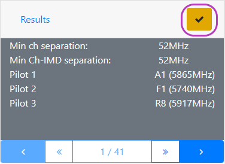

If you fly FPV with buddies you have found yourself in this situation:
It is a nice day to fly, you pick up your gear and meet your buddies at common flying place. They have already picked up channels that work for them, but you also want to fly with them.
And to make things more interesting there that one pilot with broken goggles/VTX who can only pick one channel or band (if you are lucky).
Instead of trying to figure out a correct frequency combination for all of you to fly together just let this app figure things out
Pick which bands are legal where you fly (or mostly legal) by tapping on "Bands" and selecting/deselecting bands you want to use.
Selected bands are shown within parenthesis.
Add pilots by tapping that big green plus sign. Current number of pilots is show within parenthesis. Also, tapping on "Pilots" will expand pilot section. Also, you can set a nickname for each pilot if that is your thing.
Tapping on band name for pilot will show all channels. You can choose individual channels for each band.
Or simply select all channels within a band by tapping check-mark. When all channels within a band are selected for a pilot, check-mark will turn black.
When everything is selected, bit yellow check-mark button will ask the server to find something that could work for you. Give it some time, it is not easy to search trough all those combinations. Results will show minimum separation between channels and minimum separation from any IMD frequency.
Happy flying.